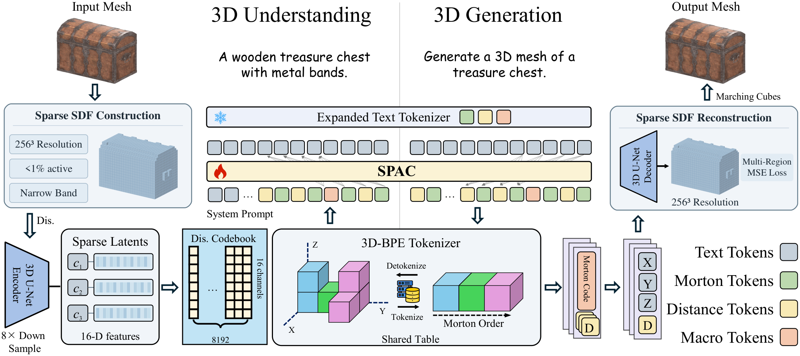
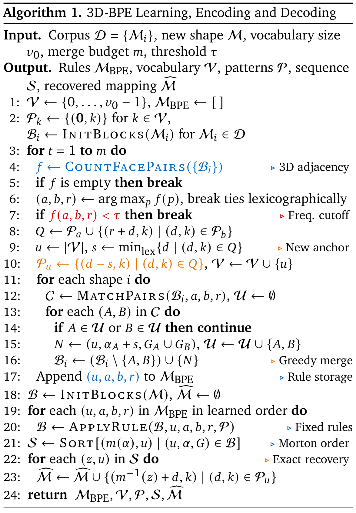
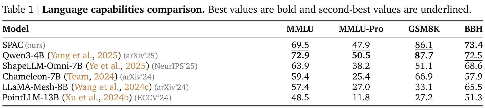
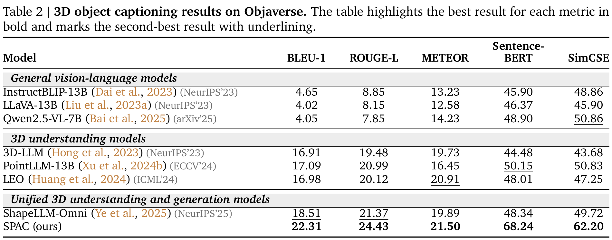
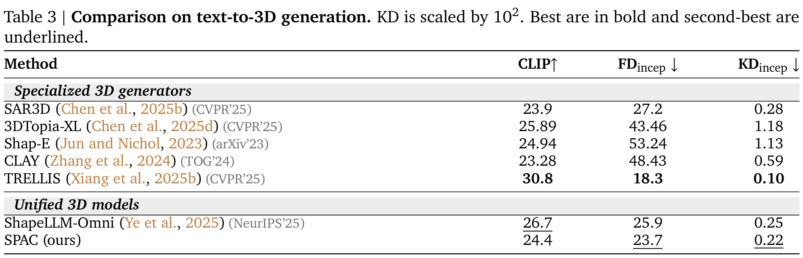
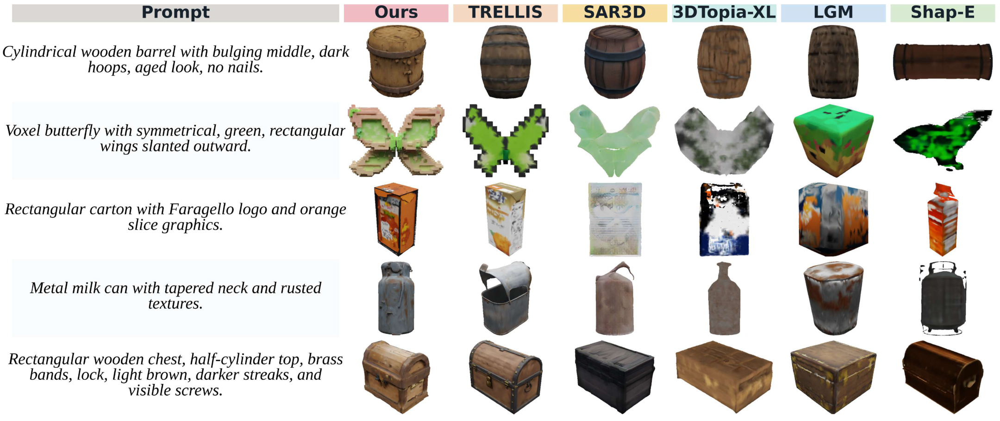
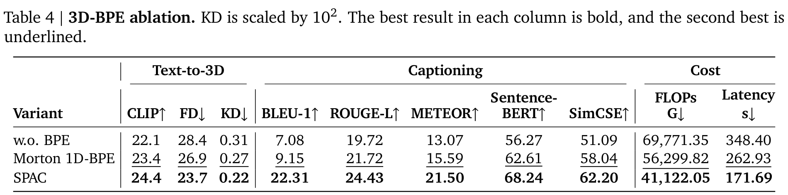
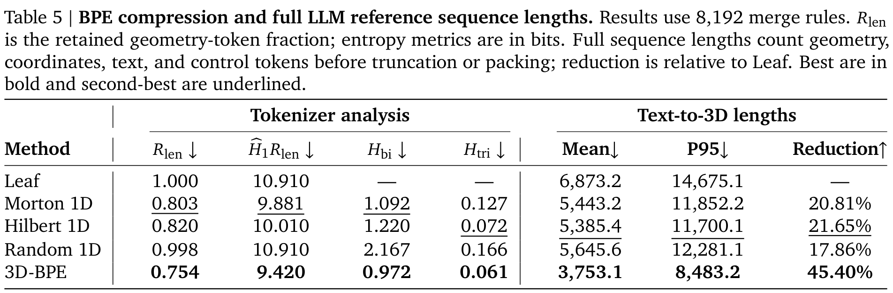
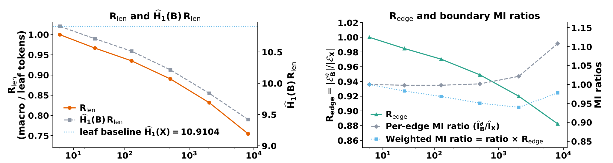
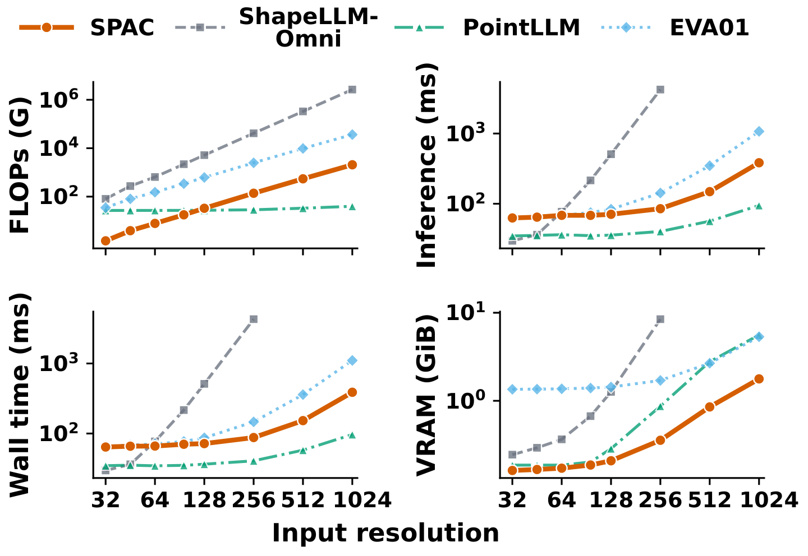

SPAC From Dense to Sparse: Morton-Ordered Sparse Mapping for Efficient 3D Mesh Generation
Abstract
Unified 3D understanding and generation require compact sequences preserving spatial structure. Dense grids yield long sequences, while serialization can separate spatial neighbors. We propose Sparse Proximity Aware Compression (SPAC), a shared sparse SDF vocabulary combining sparse encoding with reversible spatial merging. A Sparse SDF VQ-VAE quantizes near-surface features while retaining explicit coordinates, using reconstruction supervision for surface fidelity and detail. 3D Byte-Pair Encoding (3D-BPE) merges recurring face-adjacent patterns using relative offsets before serialization. Macro tokens expand exactly into leaf tokens and coordinates. After Morton serialization, a shared LLM reads geometry for captioning and predicts tokens that decode into meshes for text-conditioned generation. With fixed geometry, architecture, and band width in voxels, sparse encoder cost grows approximately quadratically with resolution. 3D-BPE reduces mean complete LLM sequence length by 45.4 percent, including coordinates, text, and control tokens. SPAC achieves strong results in both 3D captioning and text-conditioned mesh generation. Ablations show gains over leaf tokens and Morton 1D-BPE in both tasks.
How does a mesh become a sentence?
To describe a mesh, a language model needs a sequence it can read. To generate one, the same sequence must tell a decoder where each piece of the surface belongs. SPAC gives every local surface feature a code and a position, then learns which neighbors can share a token.

Merge neighbors before putting them in order
A sparse signed distance field records geometry in a narrow band around the surface. The encoder quantizes these features into leaf tokens. Whenever a face-adjacent pair recurs, 3D-BPE can replace it with a macro token that records the two parts and their relative offset.

Read the sequence in either direction
For captioning, SPAC sorts the merged blocks along a Morton curve and the language model reads their coordinates and codes. For generation, the model starts from text and predicts that sequence itself.
The merge rules undo each macro exactly, restoring the original leaf codes and their coordinates. The VQ-VAE decoder turns these into a signed distance field, and Marching Cubes extracts the mesh. Surface detail depends on SDF sampling, the codebook and the decoder.


What changes when the sequence gets shorter?
Across 43,180 text-to-3D records, 8,192 merge rules bring the mean full sequence from 6,873 to 3,753 tokens, a 45.4% reduction. The count includes text, coordinates and control tokens as well as geometry.
Language and 3D captioning
SPAC retains much of its Qwen3-4B backbone’s language performance, scoring 73.4 on BBH versus 72.5 for the backbone. On the Objaverse captioning test, SPAC leads the compared models on all five metrics, reaching 21.50 METEOR and 62.20 SimCSE.


| Model | MMLU | MMLU-Pro | GSM8K | BBH |
|---|---|---|---|---|
| SPAC (ours) | 69.5 | 47.9 | 86.1 | 73.4 |
| Qwen3-4B | 72.9 | 50.5 | 87.7 | 72.5 |
| ShapeLLM-Omni-7B | 63.9 | 38.2 | 51.1 | 68.6 |
| Chameleon-7B | 59.4 | 25.4 | 66.9 | 57.9 |
| LLaMA-Mesh-8B | 57.4 | 27.0 | 33.1 | 65.5 |
| PointLLM-13B | 48.5 | 11.8 | 27.2 | 51.3 |


| Model | BLEU-1 | ROUGE-L | METEOR | Sentence-BERT | SimCSE |
|---|---|---|---|---|---|
| General vision-language models | |||||
| InstructBLIP-13B | 4.65 | 8.85 | 13.23 | 45.90 | 48.86 |
| LLaVA-13B | 4.02 | 8.15 | 12.58 | 46.37 | 45.90 |
| Qwen2.5-VL-7B | 4.05 | 7.85 | 14.23 | 48.90 | 50.86 |
| 3D understanding models | |||||
| 3D-LLM | 16.91 | 19.48 | 19.73 | 44.48 | 43.68 |
| PointLLM-13B | 17.09 | 20.99 | 16.45 | 50.15 | 50.83 |
| LEO | 16.98 | 20.12 | 20.91 | 48.01 | 47.25 |
| Unified 3D understanding and generation models | |||||
| ShapeLLM-Omni | 18.51 | 21.37 | 19.89 | 48.34 | 49.72 |
| SPAC (ours) | 22.31 | 24.43 | 21.50 | 68.24 | 62.20 |
Text-to-3D generation
On text-conditioned generation, SPAC reaches a Fréchet distance of 23.7, compared with 25.9 for ShapeLLM-Omni. The visual comparison shows the shapes behind the scores.


| Method | CLIP ↑ | FD (Inception) ↓ | KD (Inception), scaled by 100 ↓ |
|---|---|---|---|
| Specialized 3D generators | |||
| SAR3D | 23.9 | 27.2 | 0.28 |
| 3DTopia-XL | 25.89 | 43.46 | 1.18 |
| Shap-E | 24.94 | 53.24 | 1.13 |
| CLAY | 23.28 | 48.43 | 0.59 |
| TRELLIS | 30.8 | 18.3 | 0.10 |
| Unified 3D models | |||
| ShapeLLM-Omni | 26.7 | 25.9 | 0.25 |
| SPAC (ours) | 24.4 | 23.7 | 0.22 |
The same prompt across six generators
The rows below hold the text fixed. Compare the silhouette of the barrel, the angle of the butterfly wings, and the curved lid of the chest across methods.

Which merges help?
At the same merge budget, spatial 3D-BPE retains 75.4% of the leaf-token count. Merging neighbors in the serialized Morton sequence retains 80.3%. In the downstream comparison, spatial merging also improves captioning METEOR from 15.59 to 21.50.


| Variant | CLIP ↑ | FD ↓ | KD, scaled by 100 ↓ | BLEU-1 ↑ | ROUGE-L ↑ | METEOR ↑ | Sentence-BERT ↑ | SimCSE ↑ | FLOPs (G) ↓ | Latency (s) ↓ |
|---|---|---|---|---|---|---|---|---|---|---|
| w.o. BPE | 22.1 | 28.4 | 0.31 | 7.08 | 19.72 | 13.07 | 56.27 | 51.09 | 69,771.35 | 348.40 |
| Morton 1D-BPE | 23.4 | 26.9 | 0.27 | 9.15 | 21.72 | 15.59 | 62.61 | 58.04 | 56,299.82 | 262.93 |
| SPAC | 24.4 | 23.7 | 0.22 | 22.31 | 24.43 | 21.50 | 68.24 | 62.20 | 41,122.05 | 171.69 |


| Method | Retained token fraction ↓ | Length-normalized unigram cost ↓ | Bigram entropy ↓ | Trigram entropy ↓ | Mean sequence length ↓ | P95 sequence length ↓ | Reduction ↑ |
|---|---|---|---|---|---|---|---|
| Leaf | 1.000 | 10.910 | — | — | 6,873.2 | 14,675.1 | — |
| Morton 1D | 0.803 | 9.881 | 1.092 | 0.127 | 5,443.2 | 11,852.2 | 20.81% |
| Hilbert 1D | 0.820 | 10.010 | 1.220 | 0.072 | 5,385.4 | 11,700.1 | 21.65% |
| Random 1D | 0.998 | 10.910 | 2.167 | 0.166 | 5,645.6 | 12,281.1 | 17.86% |
| 3D-BPE | 0.754 | 9.420 | 0.972 | 0.061 | 3,753.1 | 8,483.2 | 45.40% |

How does the encoder scale?


SPAC encodes a narrow band of voxels around the mesh surface. With the shape and the band width in voxels held fixed, doubling the grid resolution produces roughly four times as many active sites. Encoder FLOPs grow at a similar rate, while peak memory grows slowly.
At a grid resolution of 256, the largest tested before surface sampling reaches its cap, SPAC uses 137.98 GFLOPs and takes 85.04 ms per encoder forward pass. ShapeLLM-Omni uses 41.38 TFLOPs and takes 4,227.84 ms. Both measurements use one shape on a single A100.
PointLLM keeps its FLOPs nearly constant by using 512 point groups at every resolution. EVA01 has a higher constant cost. For dense encoding, the plot extrapolates FLOPs beyond the executable range.
BibTeX
@unpublished{yang2026spac,
title = {From Dense to Sparse: Morton-Ordered Sparse Mapping for Efficient 3D Mesh Generation},
author = {Yang, Junjie and Qian, Rui and Li, Yijiang and Xu, Jinyi and Yan, Yuhao
and Yi, Xinjian and Li, Yanfeng and Li, Mingxuan and Wan, Xiang and Fan, Jicong
and Liu, Siqi and Elazab, Ahmed and Wang, Changmiao},
year = {2026},
note = {Manuscript}
}